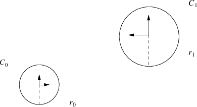
- radius is a scalar, all others are vectors
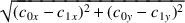
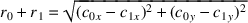
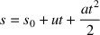
it is also known that the position circle 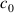 at time, 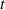 , is:
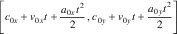
 , is:
, is:
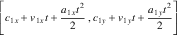
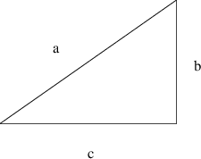
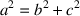
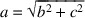
-
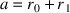
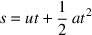
s = distance u = initial velocity a = acceleration t = time
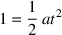
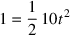
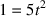
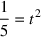
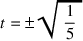
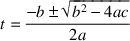
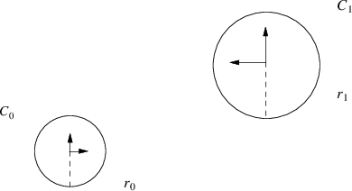
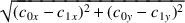
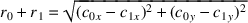
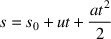
it is also known that the position circle 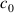 at time, 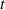 , is:
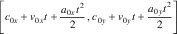
, is:
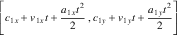
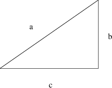
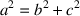
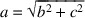
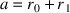